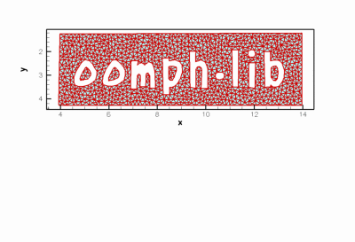
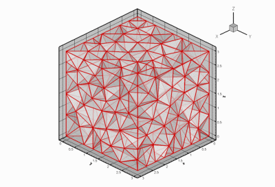
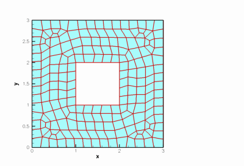

Existing (unstructured) meshes: Wrappers to third-party mesh generators
oomph-lib does not provide its own unstructured mesh generator but has several mesh classes that generate unstructured meshes from the output of third-party unstructured mesh generators.
Notes:
- The unstructured tet and triangle meshes listed below can not be used with
oomph-lib'smesh adaptation or node-update procedures. A suitably fine mesh has to be generated offline by the third-party mesh generator. If required, node-updates (in response to changes in the domain boundaries) have to be performed manually.
- For some element types, the mesh generation process is not particularly efficient (yet!). A suitable warning message is issued in such cases.
- Since the third-party mesh generators tend to triangulate the domain with simplex elements, curvilinear boundaries are not resolved more accurately by using higher-order elements unless some post-processing is performed.
- The meshes have not been tested as extensively as
oomph-lib'sstructured meshes, described elsewhere.
Mesh list
| Mesh | Representative Mesh plot |
TriangleMesh<ELEMENT>
|

|
TetgenMesh<ELEMENT>
|

|
Generating meshes from medical scans with VMTK
| 
|
GeompackQuadMesh<ELEMENT>
|

|
PDF file
A pdf version of this document is available.